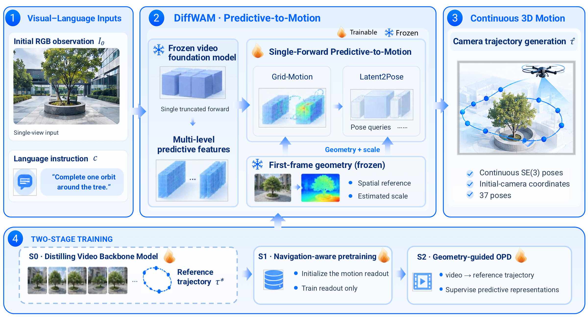
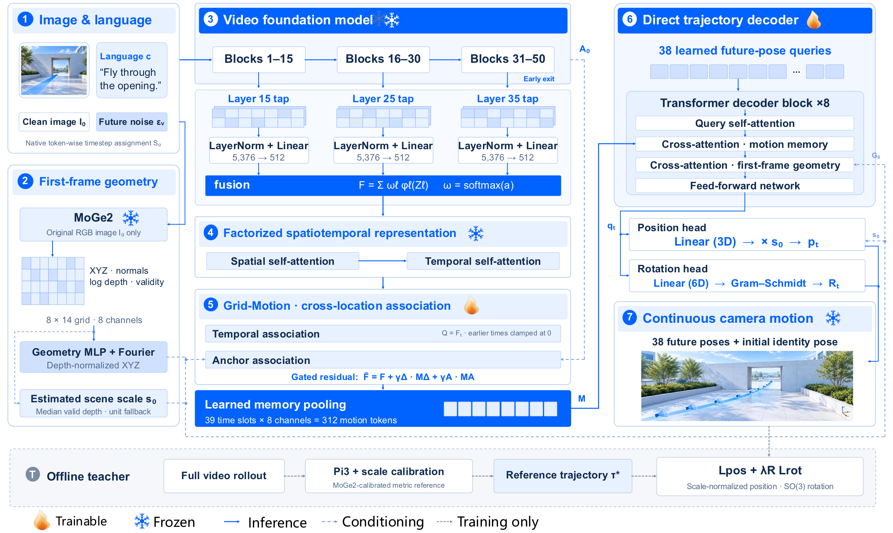
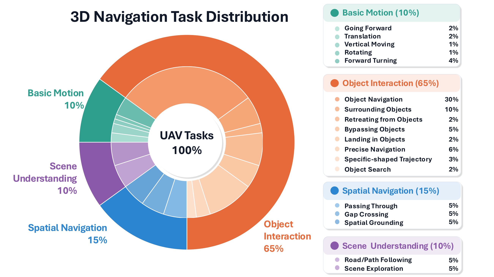
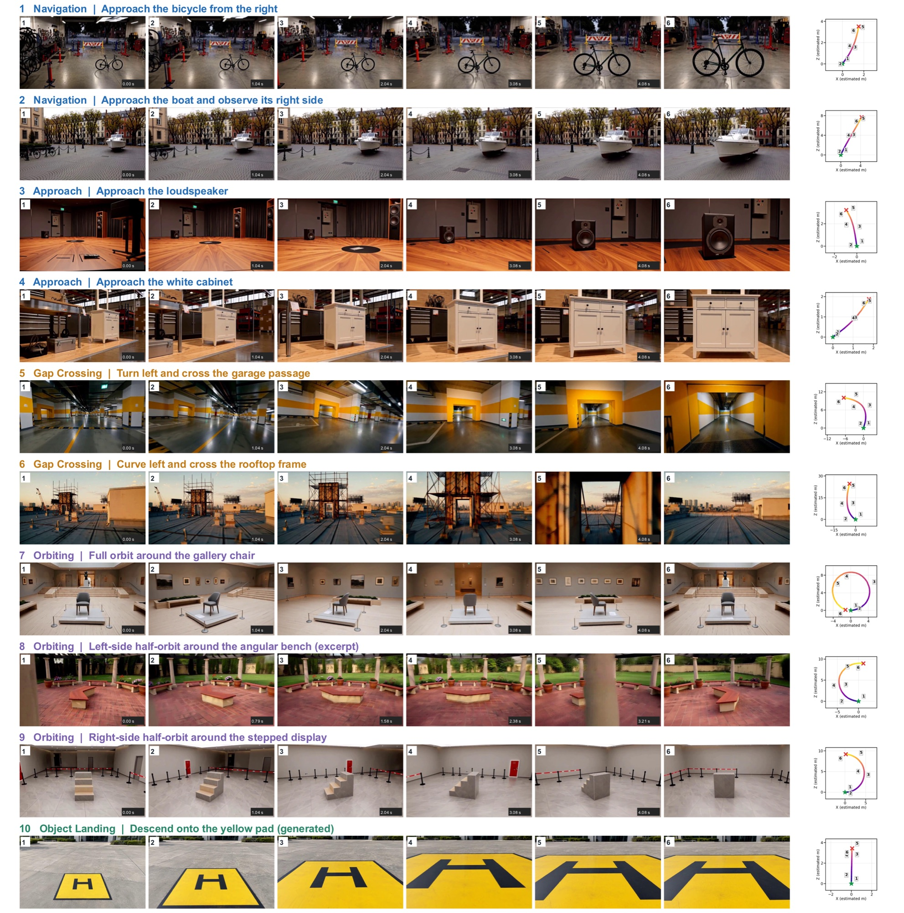
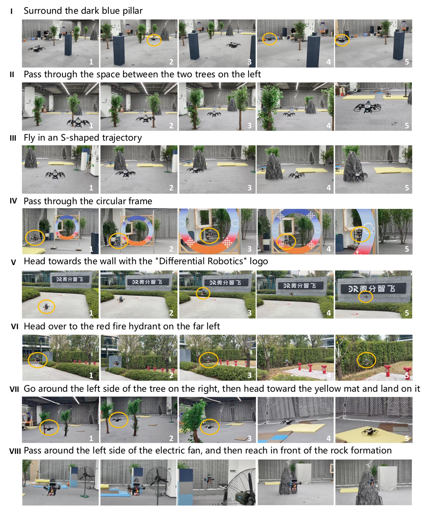
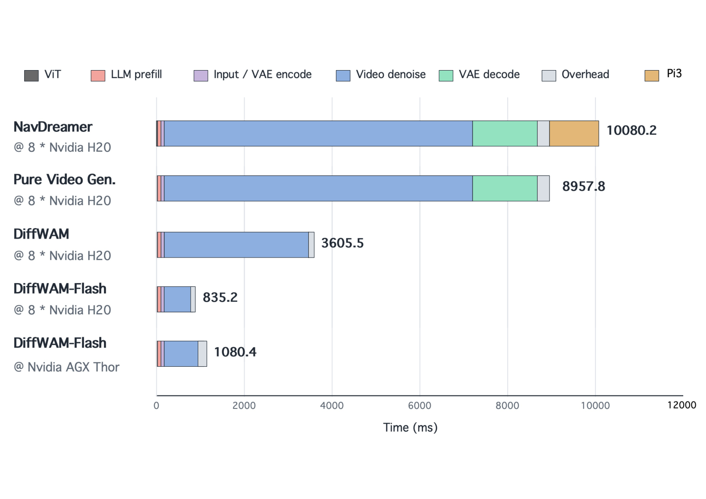

生成式视频模型的表征里，到底藏着多少“运动”？
具身导航通常要回答“去哪里、下一步做什么”，但把复杂语言指令变成满足方向、净空与空间尺度约束的连续可执行轨迹，一直是 VLA / VLN 系统的短板。DiffWAM 把这个问题收窄为：在未来视频完整生成之前，生成器的中间表征是否已经足够恢复底层导航运动？
Q1哪个去噪阶段开始承载可解码的运动信息？
早期预测特征并非显式位姿编码——场景外观、相机运动、物体运动、语言条件与未来不确定性纠缠在一起。DiffWAM 用一次截断前向读取 H3 第 15 / 25 / 35 层特征，避免完成整个视频生成调度。
Q2哪些深度与表征对动作生成最有效？
不同网络深度的表征编码的信息类型不同，对运动重建的贡献并不均匀。DiffWAM 以 softmax 权重融合三层特征，再经冻结的分解式时空模块处理，让融合与解码从数据中学习各层的角色。
Q3如何高效映射到满足几何与米制尺度的轨迹？
仅靠隐式表征推断的运动可能缺乏物理尺度。DiffWAM 用冻结 MoGe2 从首帧估计几何（8×14 网格、深度中位数尺度 s₀），把生成特征约束到初始相机坐标系下的米制位姿。
S两阶段训练：先读出，再蒸馏
S1 导航感知预训练建立稳定的表征→运动映射；S2 几何引导的 OPD 把同一次 rollout 的早期状态与完整视频重建轨迹配对监督。教师（Pi3 重建 + MoGe2 尺度校准）只看完整视频，学生部署时只用早期特征与首帧几何——非对称监督把重建移出部署路径。
三项贡献
从“生成→重建”范式升级为“单次前向解码”，并用受控实验与延迟感知执行框架给出证据。
单次前向、几何条件的 Latent2Pose
从冻结视频生成器的初始预测状态直接落地相机轨迹：空间-时间解码器保留跨位置与时间的运动证据，首帧几何提供空间参考与估计尺度。一次截断生成器计算即预测五秒位姿序列，部署无需完整视频生成，也无需多帧重建。
38 future poses · 8 transformer blocks几何监督与生成数据规模的受控研究
在统一 500-request 开发集协议下，固定更新预算，把生成监督从 1,000 对增至 64,000 对：位置 RMSE 由 2.1608 降至 1.4620 估计米；空间几何改善位置一致性，而额外教师约束在不同任务与指标上呈现混合效果。
RMSE 2.1608 → 1.4620 m延迟感知的连续无人机执行集成
预测特征与首帧几何并行处理，配合带时间戳的异步轨迹交接：在无人机执行当前已提交轨迹时准备下一段运动提议，同时处理“提议计算延迟”与“推理期间机体运动造成的参考系失配”。整体推理速度提升超过 100%。
>100% inference speed-upDiffWAM：把预测表征映射为运动
给定初始 RGB 观测与语言指令，DiffWAM 在生成器初始预测状态下做一次截断前向，提取多层特征；Grid-Motion 在记忆池化之前建立时序与几何条件化的锚点关联；Latent2Pose 结合运动记忆与首帧几何，输出带时间索引的连续相机位姿序列。

DiffWAM 总体流程。 初始 RGB 观测与语言指令条件化一个冻结视频模型；一次截断前向得到预测特征，由 Grid-Motion 与几何条件 Latent2Pose 解码为相机轨迹提议，首帧几何提供空间参考与尺度。完整视频生成与重建只用于离线教师（S0–S2）。（图 1 · DiffWAM_Pipeline）
1一次截断前向
从冻结视频生成器读取多层预测特征 — 部署时从不执行完整视频生成。
2Grid-Motion 与 Latent2Pose
39 个视频时间槽 → 312 个运动记忆 token，结合首帧几何解码出 38 个带米制尺度的未来位姿。
3几何引导蒸馏
离线教师（完整视频 + MoGe2 深度）标定尺度；部署只用早期特征与首帧几何。

DiffWAM 内部架构。 多层预测特征（层 15 / 25 / 35，5,376 → 512 维）融合后经分解时空模块处理；Grid-Motion 建立几何条件关联，再将 39 个视频时间槽池化为 312 个运动记忆 token；直接解码器以位置 / 旋转头输出 38 个未来位姿。离线教师重建完整视频（Pi3）并用 MoGe2 标定尺度。（图 2 · DiffWAM_Internal_model_architecture）
把推理延迟“藏”进已提交轨迹的执行时间里
并行提议准备、前瞻对齐与安全门控交接，把推理与飞行过程重叠起来。
异步轨迹准备与预定交接。 无人机跟踪当前已提交轨迹时，提示词改写与基于 LiDAR 的几何准备并行进行。预测骨干、位姿读出、规划与校验在 rₙ 时刻产生就绪的候选更新。DiffWAM 执行四次骨干前向，DiffWAM-Flash 执行一次；两者均在最后一次前向的 DiT 第 35 号块后退出，不解码未来视频。提前就绪的候选轨迹等待至预定交接时刻 tₕ,ₙ，重新检查有效性后才激活。剩余预算为 Bₙ = eₙ − uₙ；若无法激活有效更新，最迟应在 eₙ − Rₙ 时刻作出回退决策。本图示意候选提前就绪的情况，水平距离不表示实际测量时间。（图 · fig:async）
基准与轨迹质量：三个数据集上均排第一
评估集 DiffWAM-1000 含 1,000 个测试样本、18 种任务类型，按场景隔离划分；任务分为四大类：基础运动、物体交互、空间导航与场景理解。基准结果统一采用一米终点判据（FDE ≤ 1 m 室内 / ≤ 3 m 室外）。
三个基准上的成功率对比（SR %）
统一一米终点判据；DiffWAM 在 IndoorUAV-VLA、UAV-FLOW-Sim、DiffWAM-1000 均排名第一
DiffWAM-1000 四类任务：与最强基线对比
BM 基础运动 · OI 物体交互 · SN 空间导航 · SU 场景理解（基线为各家族最强对比方法）
| 方法 Method | IndoorUAV-VLA 平均 | UAV-FLOW-Sim 平均 | BM | OI | SN | SU · 平均 |
|---|---|---|---|---|---|---|
| WorldVLN | 39.32 | 80.24 | 86.00 | 56.62 | 50.77 | 54.00 · 58.40 |
| ImagineUAV | 33.78 | 69.65 | 68.00 | 39.85 | 32.67 | 56.00 · 43.20 |
| Fast-WAM-UAV | 35.69 | 71.27 | 73.00 | 52.34 | 38.67 | 51.00 · 52.20 |
| WorldFly | 25.71 | 53.98 | 64.00 | 24.08 | 28.62 | 41.00 · 30.50 |
| DiffWAM（本文） | 56.77 | 91.42 | 92.00 | 70.35 | 74.03 | 84.00 · 74.40 |
与各自最强基线相比，DiffWAM-1000 上四类任务的绝对提升为 +6.00 / +13.73 / +23.26 / +28.00 个百分点；三数据集总体绝对提升 +17.45 / +11.18 / +16.00 个百分点。（论文表 1）

评估任务分布。 18 种任务类型划分为四类：物体交互 65%（目标导航 30%、环绕 10% 等）、空间导航 15%、基础运动 10%、场景理解 10%。物体交互占比最大，因为语言条件下的目标选择与空间关系推理是视觉语言无人机导航的核心。（图 3 · uav_flight_task_distribution）

代表性轨迹生成结果。 第 1–4 行：目标导向导航与接近（从右侧接近自行车、接近船只并观察其右侧等）；第 5–6 行：受限间隙穿越（左转穿越车库通道、左弯穿越屋顶框架）；第 7–9 行：完整环绕与方向条件化半环绕；第 10 行：生成的降落序列。每组视觉序列附俯视轨迹。这些示例用于定性分析，不用于估计总体成功率。（图 4 · 代表性案例）
真实无人机：从单点任务到多阶段组合
在室内外环境进行物理飞行实验：独立运动原语、语言指定的目标选择、受限空间穿越，以及多阶段任务组合。实验覆盖三款微分智飞平台，兼有云辅助与完全端侧两种部署形态。

代表性真实无人机实验。 案例 I–IV：环绕深蓝色立柱、穿过左侧两棵树之间、沿 S 形轨迹飞行、穿过圆形框架；案例 V–VI：接近带“微分智飞”标志的墙面、接近最左侧的红色消防栓；案例 VII–VIII：从右侧树木左边绕过再降落黄色垫子、从电风扇左侧绕过再抵达假山前方（依次执行的多阶段目标）。这八项展示案例为精选定性演示，而非全部评估试次的完整记录；不据此推断评估回合数、聚合物理飞行成功率或分任务完成时间。（图 5 · real_world）
- NVIDIA Jetson Orin NX · 16 GB 内存
- 承载语言指定的目标选择与室内外导航
- Livox Mid-360 激光雷达 + Intel RealSense D435 相机
- 多传感器配置下的物理飞行验证
- NVIDIA Jetson AGX Thor · 128 GB 内存
- 机载运行完整 DiffWAM 推理流水线
目标消歧 + 指定侧绕行 + 降落区域接近 + 下降
切换目标参照物，保留未完成的任务要求
墙面标志与“最左侧”消防栓的相对位置限定
环绕、双树穿越、S 形飞行、圆形框架穿越
Head toward the wall logo
Language-specified target selection: the UAV heads toward the wall with the “Differential Robotics” logo and hovers in front of it.
Pass between the two trees
Constrained traversal: the UAV flies through the narrow space between the two trees on the left.
Fly toward the rock formation
Target-oriented navigation: the UAV flies toward the rock formation in the outdoor scene.
Approach the tallest blue pillar
Object selection: the UAV flies to the front of the tallest blue pillar and stops before it.
Left side of the fire extinguisher
Spatial grounding: the UAV moves to the left side of the fire extinguisher as instructed.
Pass through the circular frame
Precise pass-through: the UAV crosses the circular frame ahead without contact.
Orbit the pillar with avoidance
Orbit with obstacle avoidance: the UAV completes a full loop around the pillar while avoiding obstacles.
S-shaped trajectory flight
Trajectory following: the UAV flies forward along an S-shaped trajectory.
端侧推理：延迟与显存的实测证据
在 2× / 8× NVIDIA H20 与 NVIDIA Jetson AGX Thor 上测量历史 FastDreamer 流水线变体（BF16 推理，预热后 15 请求 × 3 轮计时，关闭条件缓存）。延迟从“准备好的图像与指令”计到“轨迹可用”，不含改写、通信与文件导出。
模型流水线延迟 P50 / P95（秒）
DiffWAM-Flash 相对 DiffWAM：P50 降 71.58% / 76.83% / 39.87%（约 3.52× / 4.31× / 1.66× 加速）
流水线总延迟对比（8× H20，毫秒）
相对 NavDreamer，DiffWAM ≈ 2.80×、DiffWAM-Flash ≈ 12.07× 加速；末行 Flash @ AGX Thor
| 历史轨迹头 | 平台 / 精度 | 模型 P50 / P95（s） | 峰值显存（GiB） |
|---|---|---|---|
| DiffWAM | 2×H20 / BF16 | 11.199 / 11.273 | 76.29 / 149.30 |
| DiffWAM-Flash | 2×H20 / BF16 | 3.182 / 3.242 | 76.29 / 149.30 |
| DiffWAM | 8×H20 / BF16 | 3.605 / 3.820 | 60.33 / 457.67 |
| DiffWAM-Flash | 8×H20 / BF16 | 0.835 / 0.912 | 60.33 / 457.67 |
| DiffWAM | AGX-Thor / BF16 | 1.796 / 1.851 | 97.60 / 97.60 |
| DiffWAM-Flash | AGX-Thor / BF16 | 1.080 / 1.101 | 97.60 / 97.60 |
Flash 的优势是延迟下降而非显存下降：同一平台两种变体报告相同的峰值显存。显存按 GiB 报告单卡最大值 / 多卡同时占用总量。（论文表 3）

分阶段延迟分解。 8× H20 上：NavDreamer 10,080.2 ms、纯视频生成 8,957.8 ms、DiffWAM 3,605.5 ms、DiffWAM-Flash 835.2 ms；AGX Thor 上 Flash 为 1,080.4 ms。分解项含视觉编码、LLM 预填充、输入 / VAE 编码、视频预测计算、VAE 解码、开销与 Pi3 重建。NavDreamer 保留未来视频解码与 Pi3 重建，DiffWAM 变体省去这两个阶段。（图 7 · h3_latency_breakdown）
消融：读出架构、特征层、计算预算、数据规模、目标函数与几何条件
配对训练消融固定数据划分、初始化、优化器、训练预算、几何输入与模型选择标准，仅改变被研究的因素；世界模型与几何骨干保持冻结。研究覆盖轨迹读出架构、世界模型特征层、预测计算预算、训练数据规模、几何条件与训练目标。
轨迹读出架构对比（六历史案例）
RMSE / ADE / FDE（估计米，六历史案例）。DiffWAM 相对 MLP：RMSE −74.84%、FDE −83.36%；相对 Faster-WAM：−50.19% / −59.63%。RoE：2.9179°，Fast-WAM 6.1389° / Faster-WAM 4.5870° / MLP 98.8160°。位姿头 P50/P95：37.35/38.84 ms，Fast-WAM 59.20/60.97、Faster-WAM 60.37/61.77、WorldVLN 3.14/3.34、MLP 0.22/0.25
世界模型特征层选择
相同原生 15×26 网格、72M 位姿头参数。RMSE：混合 0.3492 / 早期 0.7250 / 中间 0.5397 / 深层 0.3790 m。RoE：混合 2.9179° / 早期 9.2979° / 中间 2.4314°（最低）/ 深层 2.5763°
世界模型计算次数（1 / 2 / 3 / 4 次）
RMSE 0.5012 → 0.3492（−30.33%）、ADE −28.76%、FDE −36.53%。RoE（非单调）：1 / 2 / 3 / 4 次分别为 3.7897° / 3.1867° / 3.7730° / 2.9179°
生成监督数据规模（DiffWAM-1000）
1k → 64k 配对：RMSE 0.8203 → 0.4873（−40.59%）、FDE 1.4011 → 0.6884（−50.87%）、RoE 9.9409° → 2.7894°（−71.94%）
简洁损失配方对比（1,024 对 / seed 0 / 600 更新）
仅简化或仅深度归一化都不保证改善；选定配方 RMSE −5.69% / FDE −7.78% vs 历史复合损失。RoE：历史复合 3.5997° / 未归一化 4.2803° / 深度归一化 3.9662° / 选定配方 3.8131°
L特征层深度对位置影响最大，朝向排序不同
混合 15/25/35 取得最低位置误差（RMSE 0.3492 m、FDE 0.3151 m）；早期 3/5/7、中间 23/25/27、深层 33/35/37 的 RMSE 分别为 0.7250 / 0.5397 / 0.3790 m——跨深度组合相对三者分别降低 RMSE 51.83% / 35.30% / 7.86%。朝向则不同：中间层 RoE 最低 2.4314°，深层 2.5763° 次之，混合配置为 2.9179°。多深度融合有利于位置，但没有任何单一组合在所有位姿指标上最优。
S更多生成监督有效，且不增加更新预算
DiffWAM-1000 口径（随机初始化、20,000 更新、batch 32）：1k → 64k 配对使 RMSE 由 0.8203 降至 0.4873 m（−40.59%）、FDE 由 1.4011 降至 0.6884 m（−50.87%）、RoE 由 9.9409° 降至 2.7894°（−71.94%），单调改善。论文摘要口径：共同 500-request 开发集、固定更新预算下，1,000 → 64,000 对使轨迹 RMSE 由 2.1608 降至 1.4620 m、终点误差（FDE）由 3.3032 降至 2.0652 m、朝向误差（RoE）由 11.8227° 降至 8.3682°。
G空间几何有用；额外教师约束无明显收益
全参数 DiffWAM-1000 对照（64k 训练记录）：移除额外教师约束使 RMSE 由 1.4620 变为 1.4405 m、FDE 由 2.0652 变为 2.0480 m——该配置下无可测量收益。把完整空间几何换成仅尺度条件则使 RMSE 升至 1.5105 m、FDE 升至 2.2030 m，支持空间几何信息对轨迹定位的价值。
D历史 DEV1000 对照界定支持的主张范围
历史开发集上的 seed-0 对照（250 个目标导航、150 个穿行、100 个环绕案例；Pi3 参考处于 MoGe2 估计米制下）显示：移除辅助损失在历史目标协议下改善平均重建误差；时序打乱对归档检查点影响很小，而跨案例替换显著增加误差。
结论与边界
DiffWAM 研究从冻结视频生成器的首次预测计算直接恢复相机运动：多层特征、Grid-Motion 关联与几何条件的 Latent2Pose 解码，把预测运动信息与观测空间参考及估计米制尺度连接起来；FastDreamer 以并行处理、飞行时间计算调度与时间戳感知的前瞻交接补全执行接口。混合深度特征取得最低位置误差，更多世界模型计算改善位置精度，更大生成监督规模在固定更新预算下持续降低轨迹误差；调参后的两项损失在简洁损失对比中进一步改善位置重建，但历史复合目标仍保持最低朝向误差。
现有结果衡量开发集上的重建一致性；独立导航成功率与端侧执行仍需建立。一米终点判据本身不能验证穿越方向、环绕覆盖或降落完成情况；可靠的完整环绕与物理尺度精度尚未确立，按任务的闭环完成率与完整导航更新时延仍需量化。
引用本文
作者与机构取自 VLA-AN-style.sty（浙江大学、微分智飞，共 6 位作者）；依赖正式发表记录的字段已标注。
@misc{zhu2026diffwam,
title = {DiffWAM: A Fast and Efficient Navigation World Action Model},
author = {Zhu, Mo and Wu, Yuze and Huang, Xijie and Cui, Xiao and Gao, Fei and Zhou, Xin},
year = {2026},
eprint = {2609.39763},
archivePrefix= {arXiv},
primaryClass = {cs.RO},
url = {https://arxiv.org/abs/2609.39763}
}
标题、完整作者名单与年份取自论文源稿（VLA-AN-style.sty）。论文：arXiv:2609.39763。